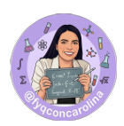

Selecciona un apartado del menú para abrirlo en la pizarra.
100%
Guion para explicar al alumno
Atajos: ←/→ cambiar paso · Espacio revelar · Ctrl+Z deshacer. La voz usa el sintetizador del navegador.

Aula MatemáticasMatemáticas · ESOAtajos: ←/→ cambiar paso · Espacio revelar · Ctrl+Z deshacer. La voz usa el sintetizador del navegador.